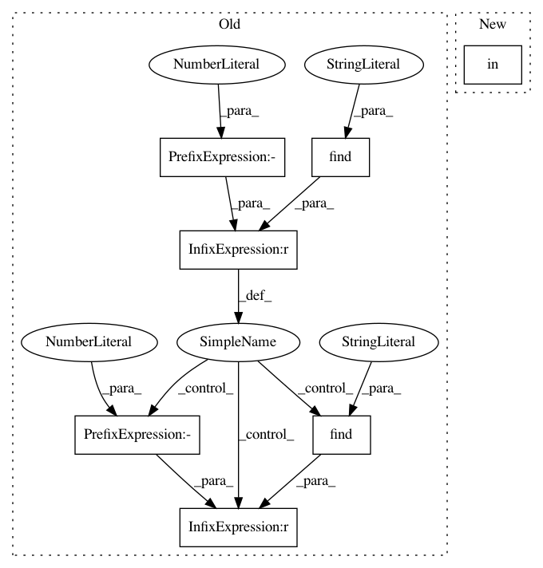

03da637ad6109a1986d5f4f15e202a8d21d30c1b,strategies.py,MCTSPlayerMixin,chat,#MCTSPlayerMixin#Any#Any#Any#,169
Before Change
if self.root is None or self.root.position.n == 0:
return "I"m not playing right now. " + default_response
if text.lower().find("winrate") != -1:
wr = (abs(self.root.Q) + 1.0) / 2.0
color = "Black" if self.root.Q > 0 else "White"
return "{:s} {:.2f}%".format(color, wr * 100.0)
elif text.lower().find("nextplay") != -1:
return "I"m thinking... " + self.root.most_visited_path()
elif text.lower().find("fortune") != -1:
return "You"re feeling lucky!"
elif text.lower().find("help") != -1:
return "I can"t help much with go -- try ladders! Otherwise: " + default_response
else:
return default_response
After Change
return "{:s} {:.2f}%".format(color, wr * 100.0)
elif "nextplay" in text.lower() != -1:
return "I"m thinking... " + self.root.most_visited_path()
elif "fortune" in text.lower() != -1:
return "You"re feeling lucky!"
elif "help" in text.lower() != -1:
return "I can"t help much with go -- try ladders! Otherwise: " + default_response
In pattern: SUPERPATTERN
Frequency: 3
Non-data size: 7
Instances
Project Name: tensorflow/minigo
Commit Name: 03da637ad6109a1986d5f4f15e202a8d21d30c1b
Time: 2017-12-27
Author: jacksona@google.com
File Name: strategies.py
Class Name: MCTSPlayerMixin
Method Name: chat
Project Name: Theano/Theano
Commit Name: 02b76031f3bc76058771744eaf7159138bef5ba7
Time: 2016-11-03
Author: abergeron@gmail.com
File Name: theano/tensor/elemwise.py
Class Name: Elemwise
Method Name: grad
Project Name: nipy/dipy
Commit Name: 3d7ab2a26228a679a1199b0291b9dc929928259c
Time: 2016-01-11
Author: matthieu.dumont@usherbrooke.ca
File Name: dipy/workflows/base.py
Class Name: IntrospectiveArgumentParser
Method Name: _select_dtype